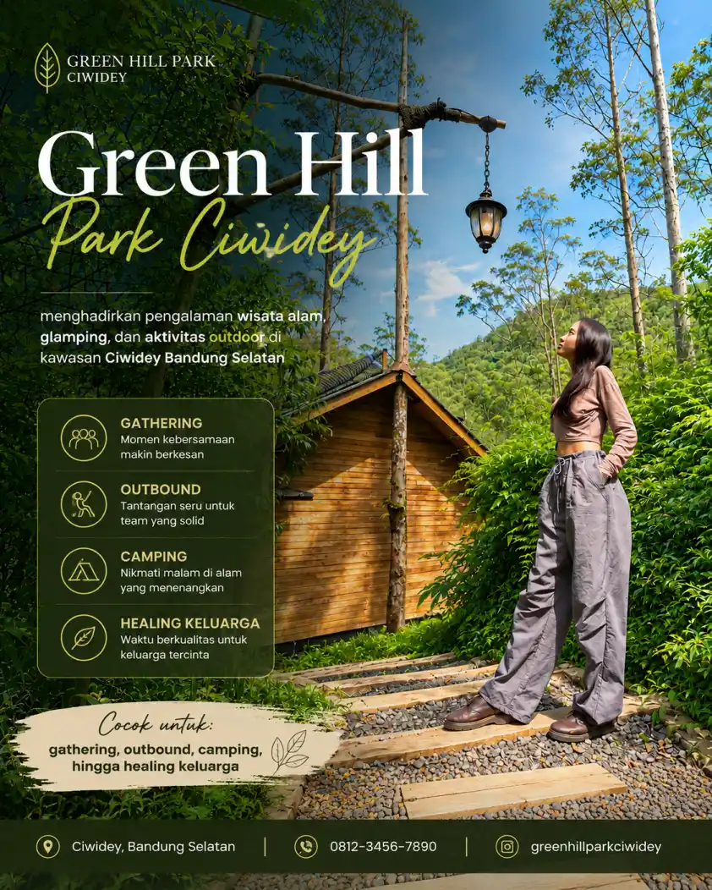

Wisata Alam
Green Hill Park Ciwidey, Tempat Favorit Gathering dan Healing Keluarga di Bandung Selatan

Bandung Selatan dikenal memiliki banyak kawasan wisata alam yang menawarkan udara sejuk dan suasana pegunungan yang menenangkan. Salah satu destinasi yang cukup populer untuk aktivitas outdoor dan kebersamaan adalah Green Hill Park Ciwidey.
Kawasan ini sering digunakan untuk kegiatan gathering, outbound, camping, hingga healing keluarga karena memiliki lingkungan alam yang masih asri dengan nuansa hutan pegunungan khas Rancabali.
Tidak hanya cocok untuk wisata keluarga, Green Hill Park juga menjadi pilihan banyak komunitas dan perusahaan yang ingin mengadakan acara kebersamaan di alam terbuka.
Suasana Alam yang Menenangkan
Berada di kawasan Ciwidey, Green Hill Park menawarkan udara dingin khas Bandung Selatan dengan pemandangan pepohonan hijau yang membuat suasana terasa lebih tenang.
Banyak pengunjung datang untuk menikmati momen santai jauh dari keramaian kota. Pagi hari di kawasan ini biasanya dipenuhi udara segar dan kabut tipis yang memberikan pengalaman berbeda dibanding suasana perkotaan.
Sementara malam hari menghadirkan suasana hangat khas camping dengan udara pegunungan yang sejuk.
Konsep wisata seperti ini kini semakin diminati karena banyak orang mulai mencari tempat untuk slow living, relaksasi, dan quality time bersama keluarga maupun sahabat.
Lokasi Favorit untuk Gathering dan Outbound
Selain menjadi tempat wisata keluarga, Green Hill Park juga dikenal sebagai lokasi gathering dan outbound di Bandung Selatan.
Area yang luas memungkinkan berbagai aktivitas kelompok dilakukan dengan nyaman. Berbagai kegiatan seperti fun games, team building, barbeque, api unggun, hingga aktivitas outdoor sering diadakan di kawasan ini.
Suasana alam terbuka membuat interaksi terasa lebih santai dan akrab dibanding acara indoor biasa.
Tidak sedikit komunitas kreatif, organisasi, sekolah, hingga perusahaan yang memilih kawasan Ciwidey untuk kegiatan kebersamaan karena lingkungan alamnya mendukung aktivitas outdoor sekaligus refreshing.
Camping dan Glamping dengan Nuansa Alam
Green Hill Park juga menawarkan pengalaman camping dan glamping yang cocok untuk berbagai kalangan.
Pengunjung dapat menikmati sensasi menginap di tengah alam tanpa harus jauh dari fasilitas yang nyaman.
Bagi keluarga yang ingin memperkenalkan pengalaman camping kepada anak-anak, konsep glamping menjadi pilihan menarik karena tetap memberikan kenyamanan sambil menikmati suasana alam pegunungan.
Area camping yang berada di tengah pepohonan membuat pengalaman menginap terasa lebih dekat dengan alam.
Pada malam hari, suasana api unggun dan udara dingin Ciwidey menjadi salah satu momen yang paling dicari pengunjung.
Cocok untuk Healing dan Quality Time
Di tengah aktivitas sehari-hari yang semakin padat, banyak orang kini mencari tempat untuk healing dan melepas penat.
Green Hill Park menjadi salah satu destinasi yang menawarkan suasana tersebut.
Duduk santai sambil menikmati kopi hangat, berjalan di area hutan, menikmati udara segar, atau sekadar berkumpul bersama keluarga menjadi pengalaman sederhana yang justru terasa berharga.
Kawasan wisata alam seperti ini tidak hanya menawarkan tempat menginap, tetapi juga menghadirkan ruang untuk memperlambat ritme hidup sejenak dan menikmati suasana alam dengan lebih tenang.
Menikmati Wisata Alam Bandung Selatan
Lokasi Green Hill Park yang berada di kawasan Ciwidey juga menjadi nilai tambah karena dekat dengan berbagai destinasi wisata populer Bandung Selatan seperti Kawah Putih, Ranca Upas, dan Situ Patenggang.
Banyak wisatawan memanfaatkan kawasan ini sebagai tempat menginap sambil menjelajahi berbagai wisata alam di sekitarnya.
Perjalanan menuju lokasi pun memberikan pengalaman tersendiri karena dikelilingi kebun teh dan panorama pegunungan yang indah.
Bagi pencinta alam, keluarga, komunitas, maupun wisatawan yang ingin menikmati suasana Bandung Selatan dengan lebih santai, Green Hill Park Ciwidey menjadi salah satu destinasi yang layak dipertimbangkan untuk liburan berikutnya.